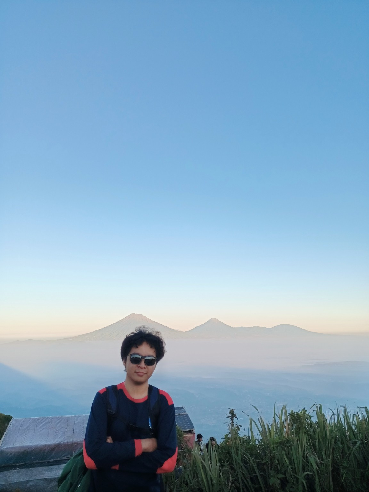

2024 — Sekarang
D4 Elektromedis
Universitas Muhammadiyah PKU Surakarta
Fokus pada teknologi elektromedis, perangkat kesehatan, dan pengembangan kompetensi digital.MAHASISWA • D4 ELEKTROMEDIS
Mahasiswa Universitas Muhammadiyah PKU Surakarta yang tertarik pada teknologi, perangkat medis, dan pengembangan web.

01 — TENTANG SAYA
Saya adalah mahasiswa D4 Elektromedis yang sedang mengembangkan kemampuan akademik dan keterampilan teknologi. Saya senang mempelajari hal-hal baru, terutama yang berkaitan dengan teknologi kesehatan dan pemrograman web.
Website ini dibuat sebagai tugas praktikum Pemrograman Web menggunakan HTML semantik dan CSS eksternal.
02 — PENDIDIKAN
Universitas Muhammadiyah PKU Surakarta
Fokus pada teknologi elektromedis, perangkat kesehatan, dan pengembangan kompetensi digital.03 — KEAHLIAN
Membangun struktur halaman menggunakan elemen HTML yang semantik dan terorganisir.
Membuat tampilan modern, rapi, responsif, serta mengatur layout menggunakan Grid dan Flexbox.
Mempelajari prinsip dasar desain antarmuka, tipografi, warna, spacing, dan pengalaman pengguna.
04 — KONTAK
Untuk keperluan tugas, kolaborasi, atau sekadar berdiskusi, silakan hubungi saya melalui kontak berikut.